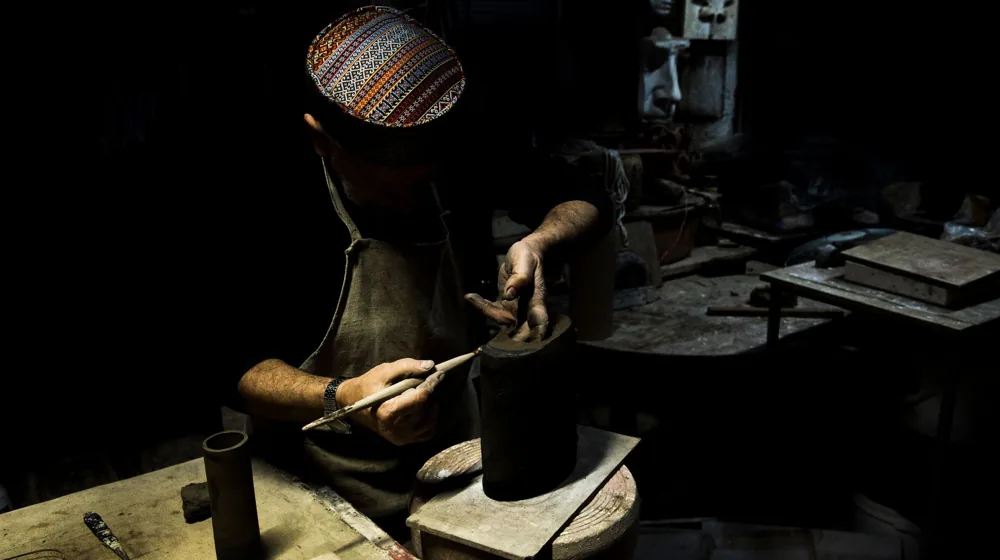

나전칠기 입문, 어디부터 시작할까? 초보자를 위한 브랜드 비교 가이드
사진: Tahir Xəlfəquliyev / Pexels (무료 이미지, 출처 표기)
나전칠기, 왜 지금 주목해야 할까요?

나전칠기(자개 공예)는 조개껍데기를 얇게 잘라 아름다운 문양을 표현하고, 옻칠로 마감하는 한국의 전통 공예입니다. 섬세한 자개 빛깔과 깊이 있는 옻칠의 조화는 고유한 아름다움을 선사하며, 최근에는 현대적인 디자인과 실용성을 접목한 제품들이 많이 출시되어 젊은 세대에게도 주목받고 있습니다.
과거에는 주로 고가의 예술품으로 여겨졌지만, 이제는 일상에서 사용할 수 있는 다양한 생활 소품부터 인테리어 포인트가 되는 장식품까지 폭넓게 만날 수 있습니다. 특별한 가치를 담은 선물을 찾거나, 공간에 한국적 아름다움을 더하고 싶은 분들에게 좋은 선택지가 될 수 있습니다.
입문용 나전칠기 브랜드, 어떤 기준으로 고를까?
나전칠기 구매를 고려하는 초보자라면 어떤 제품을 선택해야 할지 막막할 수 있습니다. 자신에게 맞는 나전칠기를 고르기 위해서는 몇 가지 기준을 세우는 것이 도움이 됩니다.
- 예산: 나전칠기는 수작업 공정으로 인해 가격대가 다양합니다. 입문용으로 부담 없는 생활 소품은 5만 원대 이하부터 시작하며, 작은 보석함이나 트레이는 10만 원대부터 30만 원대까지 형성됩니다. 좀 더 고급스러운 제품이나 장식품은 50만 원 이상을 고려해야 합니다.
- 디자인: 전통 문양을 충실히 재현한 고전적인 디자인과, 현대적인 패턴이나 색감을 사용한 모던한 디자인으로 나눌 수 있습니다. 개인의 취향과 인테리어에 어울리는 스타일을 선택하는 것이 중요합니다.
- 활용도: 실생활에서 자주 사용할 컵받침, 명함집, 작은 함 같은 실용적인 제품부터, 거실이나 서재에 품격을 더할 장식용 액자, 오브제 등 다양합니다. 어떤 목적으로 나전칠기를 구매하는지 미리 생각해 보세요.
초보자를 위한 나전칠기 브랜드 유형 비교
나전칠기 시장에는 다양한 콘셉트와 가격대의 브랜드들이 존재합니다. 입문자를 위해 대표적인 브랜드 유형별 특징을 비교하여 자신에게 맞는 선택을 할 수 있도록 돕겠습니다. 아래 표는 2026년 8월 기준, 일반적인 시장 상황을 바탕으로 작성되었습니다. 정확한 제품별 가격은 각 브랜드의 공식 채널에서 확인하는 것을 권장합니다.
첫 나전칠기, 후회 없이 고르는 구매 가이드
나전칠기는 한 번 구매하면 오래 사용하는 제품인 만큼 신중하게 선택하는 것이 좋습니다. 다음 가이드를 참고하여 만족스러운 첫 나전칠기를 만나보세요.
- 실물 확인: 가능하다면 직접 방문하여 제품을 확인하는 것이 가장 좋습니다. 온라인 사진과 실물은 색감, 광택, 자개의 영롱함 등에서 차이가 있을 수 있습니다.
- 마감 상태 점검: 자개가 들뜨거나 깨진 부분은 없는지, 칠 마감이 고르고 매끄러운지, 이음새 부분은 깔끔한지 꼼꼼히 살펴보세요. 작은 흠집이라도 발견된다면 구매 전 문의하는 것이 좋습니다.
- 활용 목적 재고: 장식용이라면 디자인에, 실사용이라면 내구성과 실용성에 더 비중을 두세요. 컵받침 등 생활용품은 코팅이 견고한지 확인하는 것이 좋습니다.
- 출처 및 정품 인증: 믿을 수 있는 공방이나 한국공예디자인문화진흥원(KCDF) 등 공신력 있는 기관에서 인증하는 제품을 선택하면 품질과 사후 서비스에 대한 신뢰도를 높일 수 있습니다.
나전칠기 관리법: 아름다움을 오래 유지하려면?
나전칠기의 아름다움은 올바른 관리를 통해 더욱 오래 지속될 수 있습니다. 다음 관리법을 참고하여 소중한 나전칠기 제품을 관리하세요.
- 직사광선과 습기 피하기: 옻칠은 고온다습한 환경이나 직사광선에 오래 노출되면 변색되거나 손상될 수 있습니다. 통풍이 잘되고 서늘한 곳에 보관하는 것이 좋습니다.
- 부드러운 천으로 닦기: 먼지가 쌓이면 부드러운 마른 천으로 가볍게 닦아주세요. 화학 세제나 거친 수세미는 옻칠과 자개 표면을 손상시킬 수 있으니 사용하지 않습니다.
- 충격에 주의: 나전칠기는 충격에 약합니다. 떨어뜨리거나 날카로운 물건에 긁히지 않도록 조심해야 합니다.
- 정기적인 관리: 오랫동안 사용하지 않는 경우, 가끔 부드러운 천으로 닦아주고 통풍시키는 것이 좋습니다.
이러한 기본적인 관리만으로도 나전칠기의 고유한 아름다움을 오랫동안 유지할 수 있습니다. 제품별 상세 관리법은 구매 시 제공되는 안내서를 참고하거나, 해당 브랜드에 문의하는 것이 가장 정확합니다.
🔗 이 글도 함께 보면 좋아요: 전통주 구독, 어떤 점이 좋을까? 현명한 선택을 위한 장단점 비교
관련 추천 상품
나전칠기 명함집, 자개 컵받침, 전통공예 트레이 관련 인기 상품 보러가기
이 포스팅은 쿠팡 파트너스 활동의 일환으로, 이에 따른 일정액의 수수료를 제공받습니다.